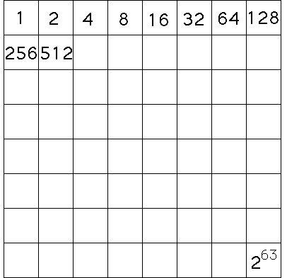

| According to George Gamow, chess was invented by Sissa ben Dahir, Wazir of the court of King Shiram. King Shiram loved the game so much that he offered Sissa any reward he could name. Perhaps trying to impress the king with his mathematical skills, Sissa asked for some rice, |
| one grain on the first square of the chessboard, |
| two on the second, |
| four on the third, |
| eight on the fourth, |
| and so on, each square's amount being the double of the previous square's. |
| How much rice did Shiram owe Sissa? |
|  |
| The last square would contain 263 grains of rice. This is a large number: |
| 263 = 9,223,372,036,854,775,808 |
| Suppose Shiram had tried to stack the rice of this last square in a column, each grain lying on top of the one below it. A grain of rice is about 1 mm thick. How high a column of rice would Shiram have obtained? |
| Would it be higher than Mt. Everest? |
| Higher than the distance to the moon? |
| To the sun? |
| Here is the answer. |
| The quickness of doubling is not just related to the history of chess. The most elementary population models postulate the growth rate is proportional to the population size (twice as many people means twice as many couples having babies, means twice as many babies). This led Thomas Malthus to predict population pressure problems, because Malthus argued populations grow more rapidly than their ability to produce food. |
Return to Deterministic Chaos.